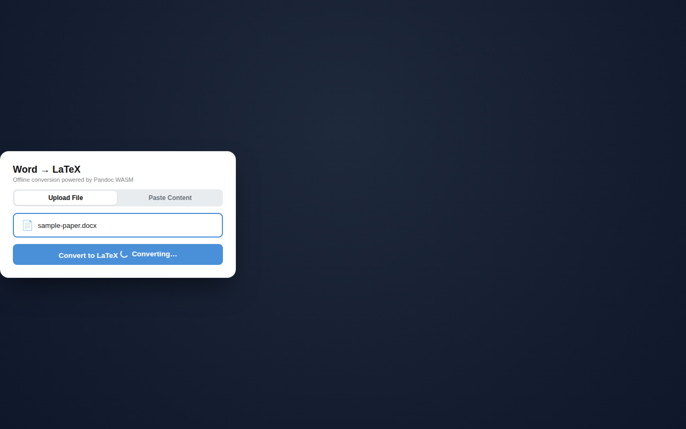
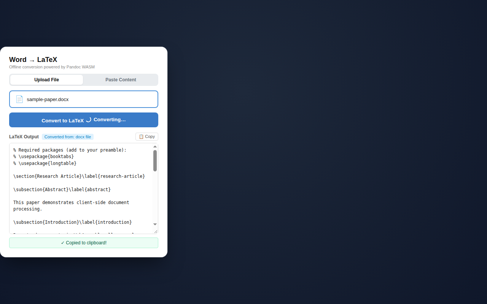
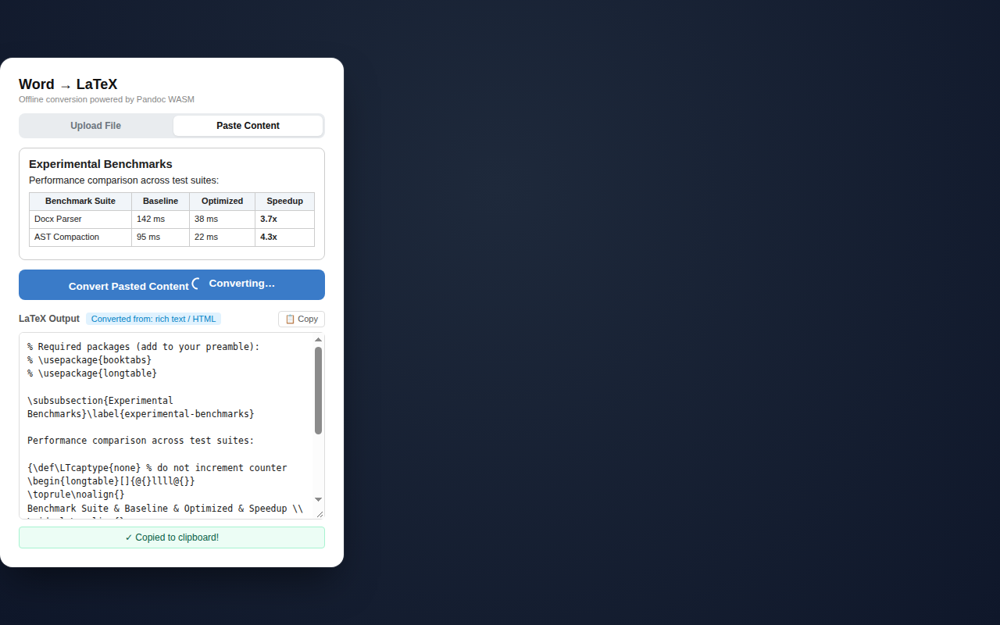

Convert Word Docs, Pasted Text, and Tables to Clean LaTeX
Engineered exclusively for Microsoft Edge. Works entirely offline with zero server calls, auto-cleans Pandoc quirks, and copies paste-ready fragments instantly.
How It Works
Three straightforward steps to paste-ready LaTeX output in seconds.

Upload or Paste
Choose a local .docx Word document or switch to the Paste Content tab to drop formatted text and tables directly from Microsoft Word, Google Docs, or web pages.

Convert In-Browser
Click Convert. The bundled Pandoc WebAssembly engine compiles your document locally. Our automated pipeline removes \tightlist, unwraps \pandocbounded, and generates required \usepackage headers.

Paste Into Your Project
The LaTeX fragment automatically copies to your clipboard. Paste it straight into Overleaf, TeXstudio, VS Code, or any LaTeX document body with zero manual reformatting.
Why Offline Matters
Your manuscripts, confidential research, and course materials stay strictly private.
Zero Server Communication
Your documents never leave Microsoft Edge. No uploads, no API endpoints, and no cloud processing. All conversion runs on your device CPU.
Works Without Internet
All WebAssembly code and Pandoc binaries are bundled inside the extension package. Continue converting papers on planes, trains, or offline study rooms.
No Account or Data Retention
No login, subscriptions, or telemetry tracking. Once the popup closes, memory buffers are immediately cleared by Microsoft Edge.